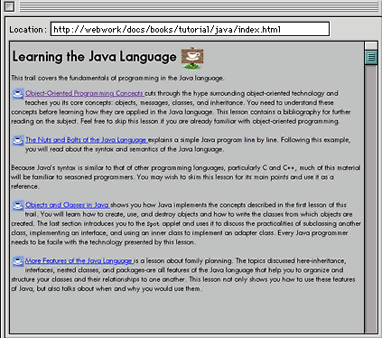
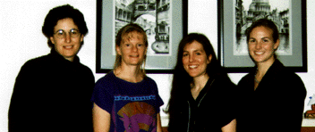
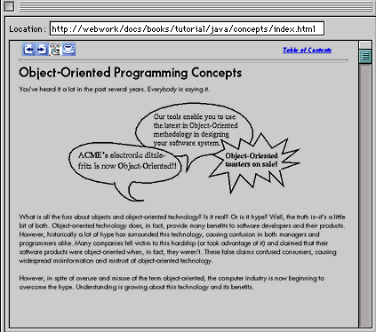

INSIDE THE JAVATM TUTORIAL
by Steve Lipson
It's hard to find a Java programmer anywhere who hasn't at least visited (and then likely become immersed in) The Java
Tutorial -- the free, online introduction to the Java language available on the java.sun.com Web site.
On a typical week, the opening page of the Tutorial can receive more than 80,000 visits. The tutorial pages frequently rank as the most popular area on the java.sun.com Web site. And of course this readership doesn't even count the many thousands who are reading the tutorial from CD-ROM or using cached versions on their local networks.
More than Just a Basic ``Tutorial''
The Java Tutorial provides the first detailed introduction many people get to the Java language and Java technology. In addition to the basics, it delves into topics as diverse as security, internationalization, networking, graphical user interfaces, and JavaBeans.
Despite the name, authors Kathy Walrath and Mary Campione consider the Tutorial
to be more of a programmer's guide than a formal tutorial.
"Unlike a tutorial, you don't have to go through it sequentially;
it has scores of examples, and you can use it as a reference," says Walrath.
"We changed the name from Programmer's Guide to Tutorial
at our publisher's request, so that beginning programmers
wouldn't be scared off by it."
How do people use it? There is no single approach, but typically users
revisit the Tutorial regularly to check out new examples and walkthroughs
or to get information on new releases and revisions. Like Java
technology, the Tutorial is a work in progress that is constantly improving with age.
As one of the Tutorial's Amazon.com reviewers says,
"Even the most experienced Java programmers I know
continually learn new tricks and techniques from the Tutorial."
Designed for the Web
Designed first as an online document, the Tutorial's unique hypertext approach lets the reader follow "trails" to learn
topics in greater depth; its "hands-on" approach has earned the Tutorial
--and its authors-- a steady stream of accolades and praise.
It is constantly being revised, updated, and
expanded, providing programmers an easy means of keeping skills up to date.
|

|
|
Learning the Java Language: One of many "trails" users can explore in The Java Tutorial.
|
Wildly Popular
Perhaps surprisingly, a $39.75 printed version is quite a brisk seller in book stores even though the tutorial is available online for free. In part, the popularity of the printed book is attributable to its convenience and portability: As one satisfied programmer said when the
book came out, "Now the Java Tutorial is even good in bed!"
The Java Tutorial book
has been reprinted four times, and has just undergone another major
revision. The book is more than 800 pages and
includes a CD-ROM that contains the online tutorial and the JDK; you'll find
it at any technical bookstore or can order the book online from booksellers such as Amazon.com.
Interestingly, the popularity of The Java Tutorial has steadily increased even though there are now many other outlets for Java training, such as university courses and commercial programming classes. In fact, several computer science courses and training sessions recommend The Java Tutorial (either in online or printed form) as a supplement to their course material.
Behind the Tutorial: A Great Team
Kathy Walrath and Mary Campione, the creators of the Tutorial, have
successfully documented and thus have made a major contribution to defining
and formalizing the Java platform. As the authors of the most popular Java technology instructional guide, they are in no small way responsible for building the Java community. These two extremely bright women have a definite sense of how to document and teach the platform.
|

|
|
The Team: Manager Lisa Friendly, authors Mary Campione and Kathy Walrath, and Alison Huml.
|
Kathy Walrath received her BS degree in computer science from UC Berkeley
in 1986. A stint with NeXT Computers, Inc. gave her the opportunity to
immerse herself in object oriented programming. It was at NeXT where
Kathy also met her future co-author, Mary Campione. In 1993, opportunity
came knocking and Kathy became employee #36 at Sun Microsystems' FirstPerson
project. FirstPerson really represented the groundwork and basic staff for
Javasoft, so Kathy has effectively been a member of the team and has been
documenting the Java language since its embryonic stage.
As Kathy's responsibilities and (Tutorial) vision grew, it was clear she
needed help. It was time to reconnect with Mary Campione.
Campione was glad to join. After receiving her BS in computer science at
Cal Poly in 1985, and then having worked a variety of engineering jobs
--including her time at NeXT -- she had been looking for something that
would allow her to put her own experience to work. She had come to the
realization, having co-authored two books (one on PostScipt), that she
preferred the writing process over the engineering process. In 1995, she
gladly accepted Kathy's offer to work at Sun. A stellar writing team was
born.
As Java technology evolved, the Tutorial began to take on a life of its own. "Our managers gave us a lot of autonomy," says Campione. "That meant that we could use our own judgment about what needed to be covered and how to cover it."
|

|
|
The Java Tutorial covers everything from basic principles of object-oriented programming to the newest components of the Java platform.
|
Birth in Print
As the momentum began to build, book
publishers wanted access to Walrath's and Campione's work. Numerous
publishers approached Sun with the hopes of publishing the
Tutorial, as well as a Java Series. Gosling and Lisa Friendly
interviewed a number of different publishers and picked one: Addison Wesley.
 The authors say it was Addison Wesley who best understood and shared the vision of the authors, acknowledging that the Tutorial had to remain online and free of charge,
even when the books were published. In addition, the authors and the Series Editor felt it was most important that information would not be published in
hard copy until the release it was based on had been finalized and shipped.
The authors say it was Addison Wesley who best understood and shared the vision of the authors, acknowledging that the Tutorial had to remain online and free of charge,
even when the books were published. In addition, the authors and the Series Editor felt it was most important that information would not be published in
hard copy until the release it was based on had been finalized and shipped.
"Computer book publishers are typically of the mind
that first is best", says Friendly. "We didn't want to be first, we just
wanted to be right. When Addison Wesley agreed and let us decide what
should and shouldn't be included, we knew we had our publisher." Addison
Wesley made the right choice; the Java Tutorial has become something of a
runaway best seller, as technical books go.
In 1996, Addison Wesley released the first printed version of The Java Tutorial (ISBN 0-201-63454-6).
Labor and Delivery Pains
Was it easy to translate the online Tutorial to book form? Campione and
Walrath understood their task, but extenuating circumstances made their
deadlines both difficult as well as somewhat comical.
As it happened, both women were pregnant while translating the Tutorial into book form. With their due dates two
weeks apart -- sandwiching the due date for the book's manuscript -- things
got a little dicey. The era produced not only a great book, but two adorable
tutorial babies.
Looking back, both authors speak gratefully of the
role of Randy Nelson, [Dean of Pixar University] who ultimately helped them
get the manuscript to Addison Wesley on time. "Randy acted as the
book's midwife," says Walrath. "He was really great."
It is likely that the book's innovative conversion from a web-centric,
hyperlinked set of lesson trails to an equally well navigated, more
linear, hard-copy orientation was among the first, and perhaps one of
the few books ever published in this manner. The Tutorial works
extremely well in both formats and its dual availability has been a
success for its users, for the publisher, who broke new ground with
such simultaneous publication, and for Sun and the authors, whose goal
it was to teach developers around the world how to program in Java.
Ahead for the Tutorial
What's in store for Walrath and Campione? "We are really anxious to
document the upcoming release, says Campione. "Alison Huml, who recently joined
our group, has some great ideas for improving the online Tutorial. With her help we're going to
revamp the whole user interface. We also expect to have a new search
engine and to provide an updated page template. We're excited about it."
They have a lot to be excited about. The Tutorial has been instrumental
in educating users in the ways of the Java language, and in turn has helped the Java developer community thrive (the Java developer community is expected to soon boast 700,000 programmers). They are excellent writers with an exceptional sense
of what is most important in the learning process, and they have helped
make Java technology accessible and understandable to everyone who reads the Java Tutorial.
Other Java Language Tutorials
In addition to the main tutorial on java.sun.com, Sun's Java Developer Connection Web site offers additional short courses on specific topics such as JDBC interfaces, JavaBeans, Swing, and the AWT.
Membership in the Java Developer Connection is free.
The short courses are listed on the JDC's Online Training page.
This page was updated: 05-Jan-98